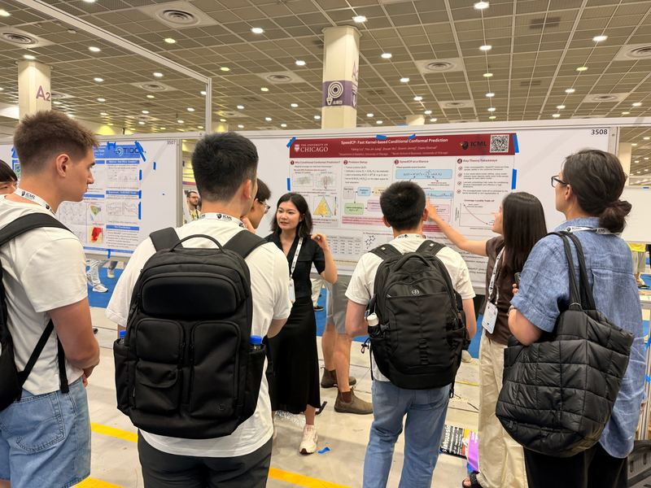
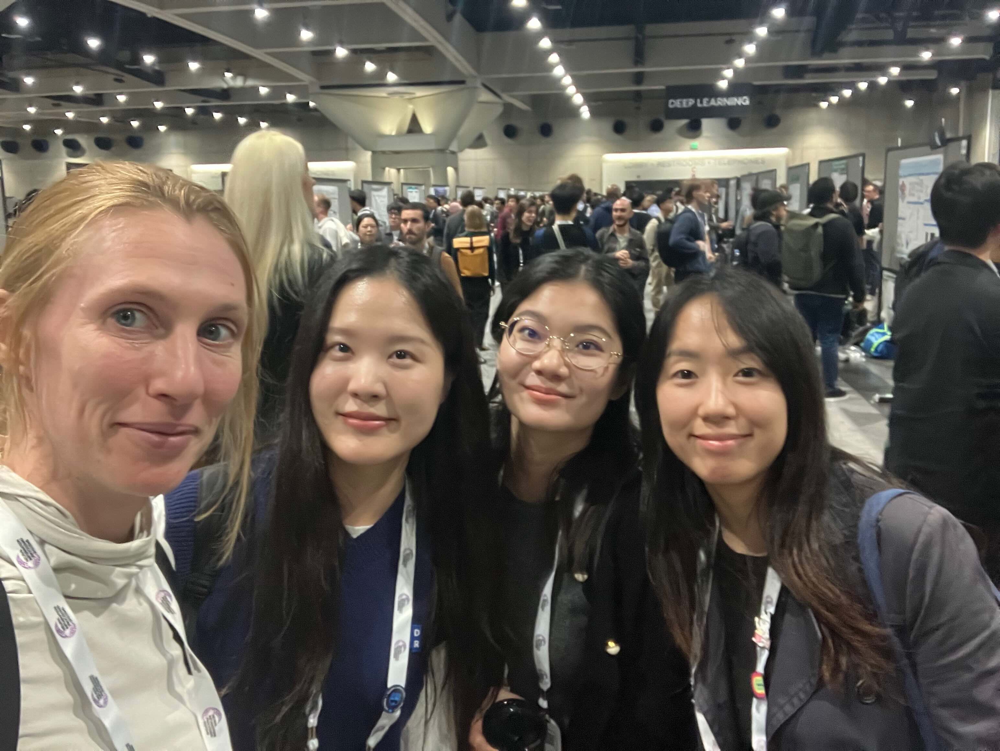
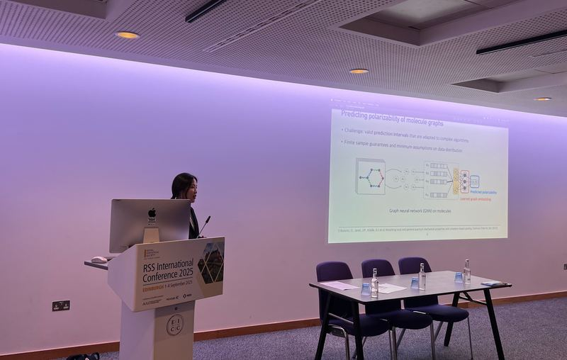
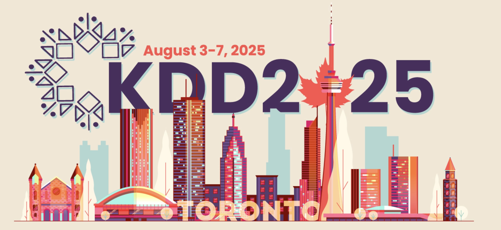
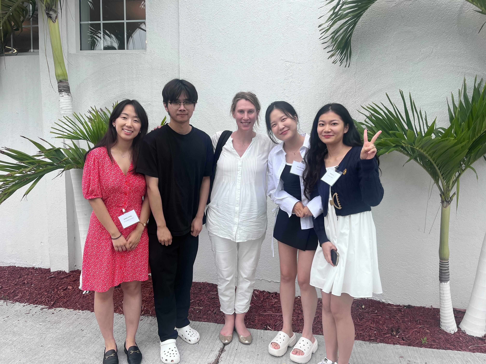
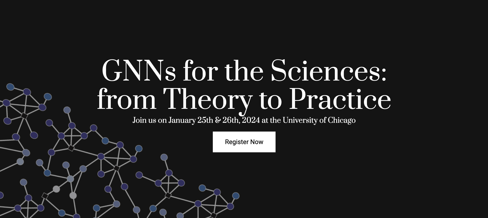

New journal publications in 2026
Our work on tensor and sparse topic models and canonical correlation analysis is appearing in JMLR and the Electronic Journal of Statistics.
Our work on tensor and sparse topic models and canonical correlation analysis is appearing in JMLR and the Electronic Journal of Statistics.
Explore our latest work on data selection for fine-tuning, GNNs for brain connectomes, graph-based learning, network dynamics, and microbial communities.
Our students presented the group's work on fast, kernel-based conditional conformal prediction at ICML.
The lab is not currently accepting applications for student, research assistant, or postdoctoral positions.
We study statistical properties of GNNs to try and design interpretable, reliable graph learning pipelines.
We develop high‑dimensional estimators that leverage sparsity and known structure for robust inference.
We deploy our statistical frameworks to uncover spatially organized gene expression patterns and cell–cell interactions from high-resolution transcriptomic data.
We use high-dimensional statistical methods to identify genetic and metabolic determinants of key microbial traits, such as thermotolerance and photosynthetic efficiency.

Sharing SpeedCP, our work on fast, kernel-based conditional conformal prediction, at the poster session.

Sowon, Yating, Yeo Jin, and Claire attended NeurIPS 2025 in San Diego.

She showcased the group's work on conformal prediction.

She presented her work on unsupervised learning for GNNs.
The workshop highlighted recent advances and new perspectives in GNN theory.

We showcased our work on topic models, GNNs and CCA during the poster session.

We were lucky to have great speakers and learned a lot about challenges in the deployment of GNNs in the Physical Sciences.
{kind=link}
{kind=link}